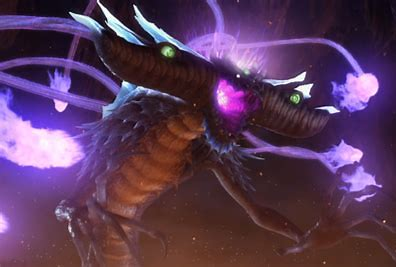

Prologue
It all begins at the beginning of time, where the earth already existed and 2 beings were created, Dark Gaia and Light Gaia, good and evil, light and darkness. These beings in turn fought for the good they believed in, but they ended up sealed inside the planet to maintain balance, with the legend that someday they would return to fight again.
Some time later on a very distant planet there was a very advanced alien race that would end up being expelled from their home planet by a calamity called The End, who would end up arriving on Earth and bringing the chaos emeralds, The End follows them and they They wage a war where they trap The End in cyber space, thus sealing him.